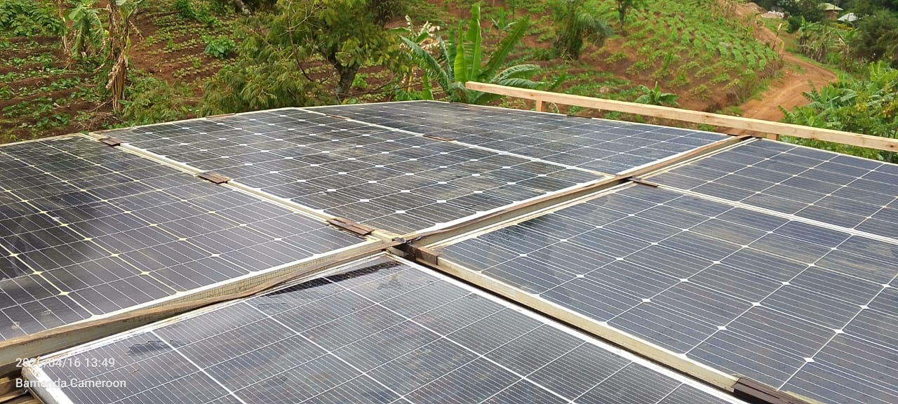

3kVA hybrid solar inverter
Added hybrid power conversion for the upgraded water-pumping system.
Explore solar-powered water pumping solutions and PHÓTIZÓ’s Ntamuche community water-system rehabilitation and upgrade project.

Solar water pumping can help communities, farms, schools and institutions move water where grid power is limited or unavailable. The design must match the water source, pump requirements, pumping depth, daily demand and storage arrangement.
PHÓTIZÓ's Ntamuche community project involved rehabilitating and upgrading an existing solar-powered water system that had been operating only during daylight hours and could not adequately meet community demand.
Useful starting information includes the water source, pump make and rating, pumping depth or total head, required flow rate, daily water demand, site location and whether a storage tank is available.
Discuss a project →The original system ran only during daylight hours. Limited solar-panel capacity meant the system could not adequately meet community water demand. PHÓTIZÓ upgraded the system to improve energy availability and support more dependable water delivery.
Added hybrid power conversion for the upgraded water-pumping system.
Added battery storage to help the system operate beyond direct daylight hours.
Increased the solar array to better support the system's energy requirements.
Added automatic water-level control to support system operation.
The upgrade was intended to improve water availability beyond daylight hours; actual results depend on site conditions, water demand and system operation.
The work addressed a practical water-supply challenge for the Ntamuche community.
Selected photographs from the Ntamuche solar water-pump rehabilitation and upgrade.




Project images and descriptions are presented as PHÓTIZÓ's record of its work. The project description does not imply a guaranteed flow rate or uninterrupted 24-hour water supply.
A water-pumping system should be engineered around the water source and the amount of water needed, not selected only by panel wattage.
Identify borehole, well, river or storage source, water level and seasonal variations.
Estimate litres per day, required delivery times and storage capacity.
Check pump specifications, head, flow, solar array, controller and any battery requirements.
Install controls and protection, test operation and explain routine inspection and maintenance.
It depends on the system design. Battery storage or water storage can help meet demand outside solar production hours. The right approach depends on the pump, water demand and project budget.
Often, yes. A site assessment is needed to understand the existing panels, pump, controller, inverter, battery, wiring and water storage arrangement before recommending changes.
The Ntamuche project is an example of PHÓTIZÓ's work upgrading a community solar water-pumping system. Contact us to discuss a similar project and its site requirements.
Talk to PHÓTIZÓ about a solar water-pumping assessment or an upgrade to an existing system.
Discover our solar services, equipment, community projects and vocational training programmes.